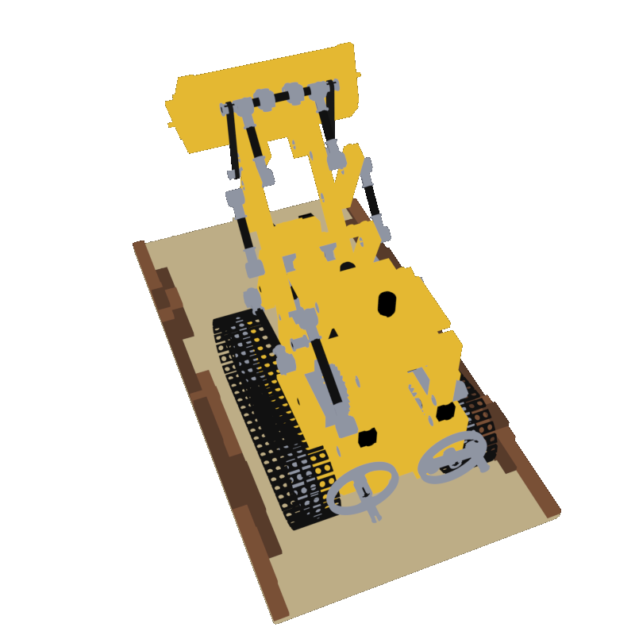
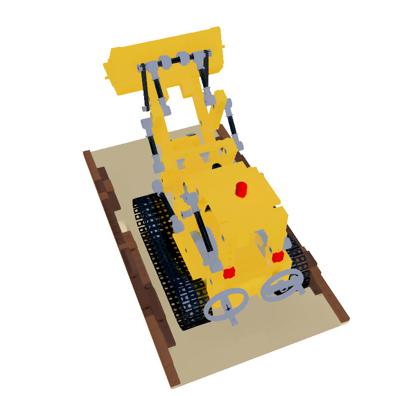
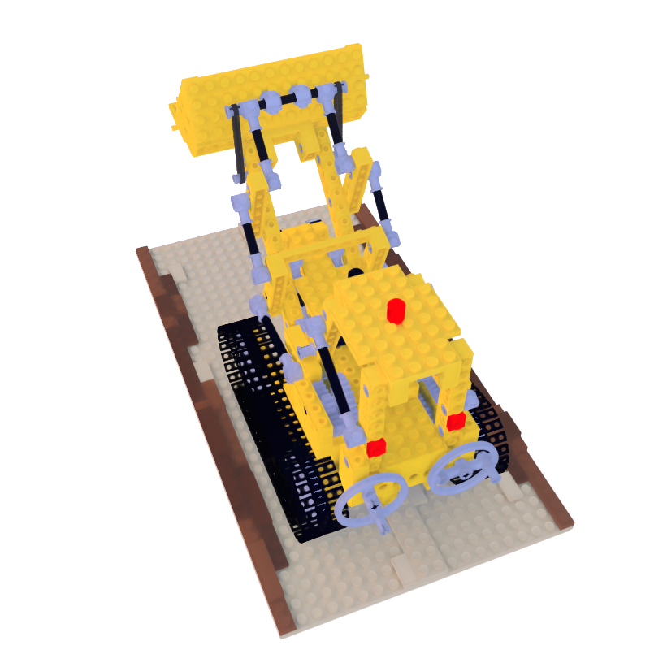
Abstract

We present MIRReS, a novel two-stage inverse rendering framework that jointly reconstructs and optimizes explicit geometry, materials, and lighting from multi-view images. Unlike previous methods that rely on implicit irradiance fields or oversimplified path tracing algorithms, our method first extracts an explicit triangular mesh in the initial stage. Subsequently, it employs a more realistic physically-based inverse rendering model in the second stage, utilizing multi-bounce path tracing and Monte Carlo integration. By leveraging multi-bounce path tracing, our method not only effectively estimates indirect illumination--including self-shadowing and internal reflections--but also enhances the intrinsic decomposition of shape, material, and lighting. Moreover, we incorporate reservoir sampling into our framework to address the noise in Monte Carlo integration, enhancing convergence and facilitating gradient-based optimization with low sample counts. Through both qualitative and quantitative assessments across various scenarios, especially those with complex shadows, we demonstrate that our method achieves state-of-the-art performance in decomposition results. Additionally, our optimized explicit geometry supports further applications in scene editing, relighting, and material editing, compatible with modern graphics engines and CAD software.
Quantitative comparison
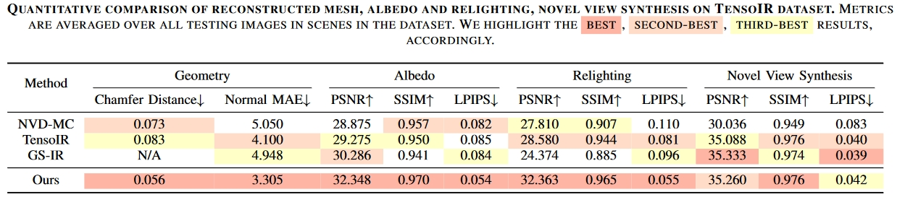
Note that in terms of novel view synthesis, our method demonstrates similar performance compared to TensoIR and GS-IR. This is because these baselines tend to overfit the training dataset and bake the complex lighting effects (eg. shadows) within the materials, as qualitatively analyzed above. Despite this, we can produce considerably better material estimation and relighting results.
Albedo results and relighting results
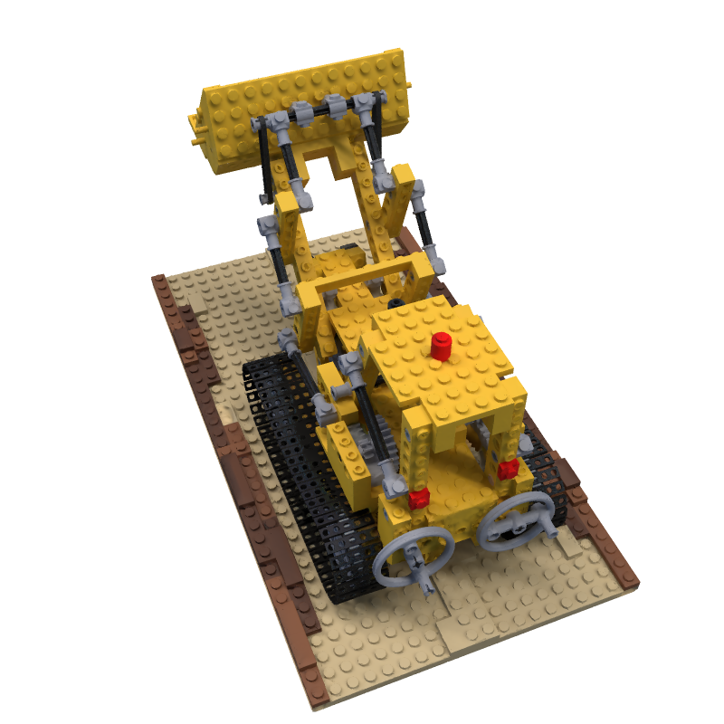

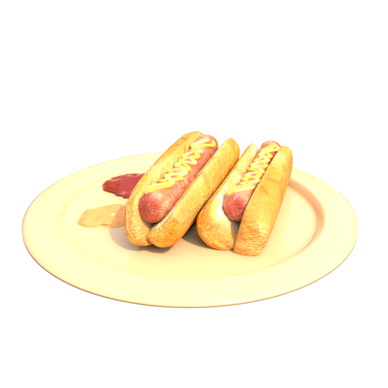
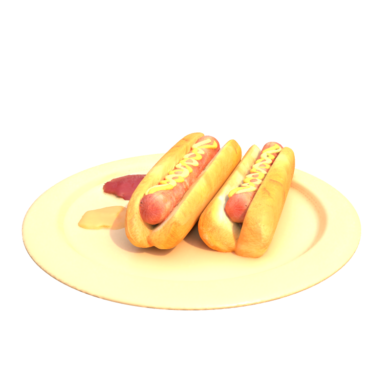
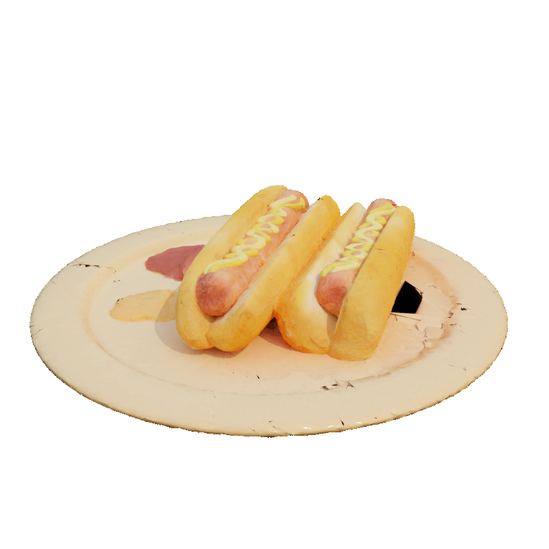
Drag the slider to compare!
Albedo results
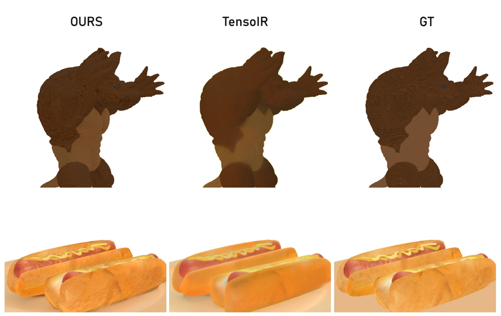
Normal Comparison on before(Neus2), and after mesh refinement(Ours), and Tensoir
Take a close look at the granules on the Lego.
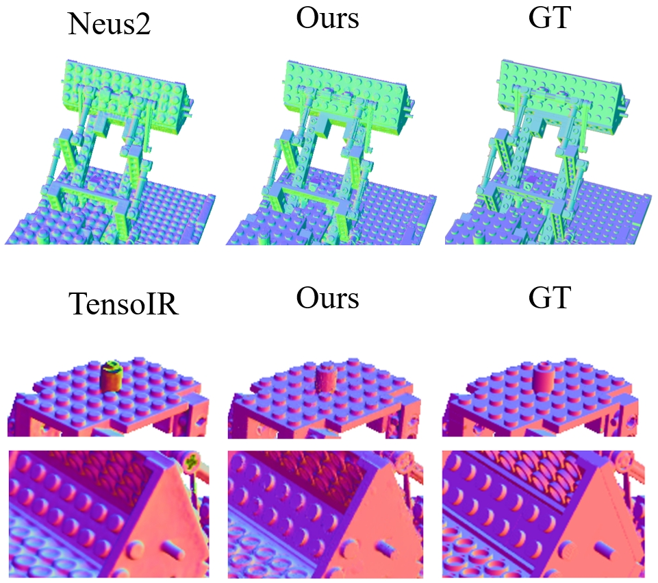
visibility results
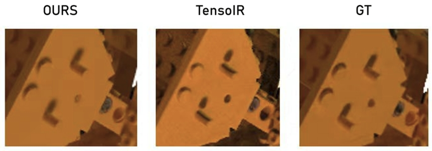